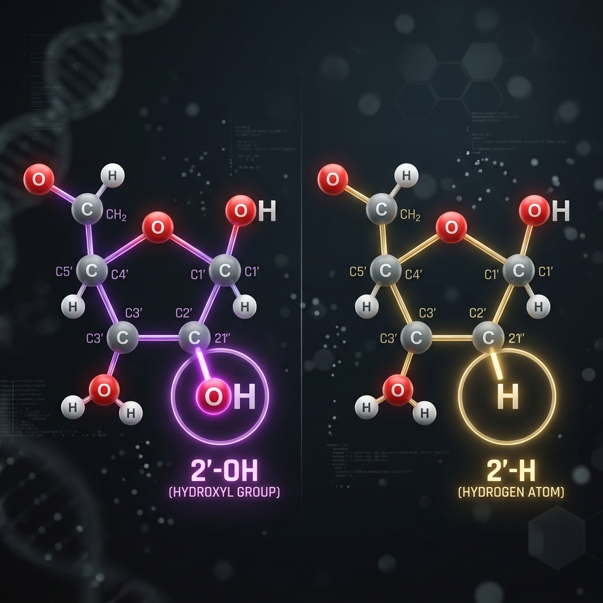
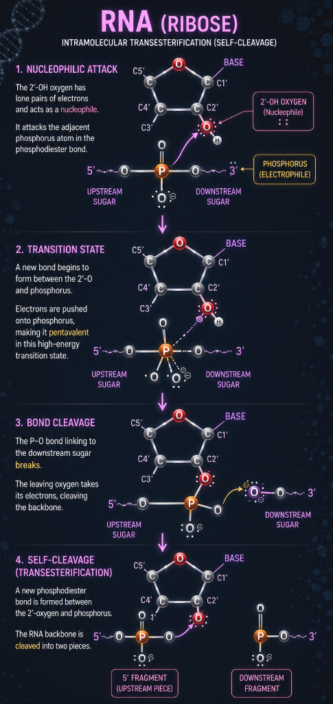
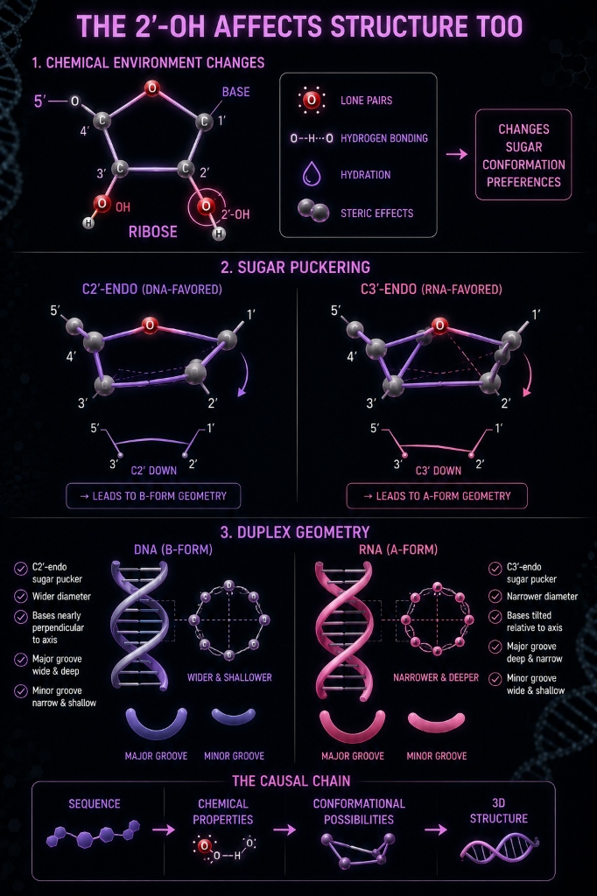
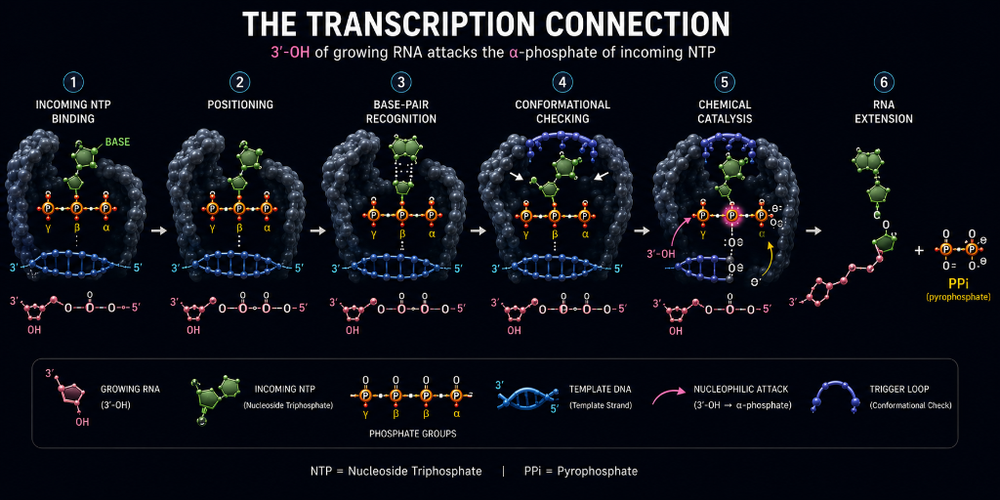

TOPIC 10
THE RIBOSE SUGAR
The Molecular Switch Between RNA and DNA Stability
Why Should a Bioinformatician Care?
As bioinformaticians, we rarely watch RNA degrade or fold. Instead, we analyze:
- FASTA & FASTQ files
- RNA-Seq read alignments
- Secondary structure predictions
- Molecular dynamics trajectories
Yet every computational analysis assumes that these nucleic acids obey their chemical rules. If these physical principles failed, almost every downstream bioinformatics algorithm would become unreliable.
Understanding the chemistry explains why we can treat DNA as a static archival string, but must model RNA as a dynamically folding, highly reactive molecule.
Where Does This Fit?
- Sequence Analysis: Chemistry can be abstracted away.
- Structure Prediction: Sugar chemistry and thermodynamics matter.
- Molecular Dynamics: Physical chemistry becomes essential.
- Enzyme Recognition: Geometry dictates substrate binding.
This shows where sequence-level abstraction is sufficient, and where underlying chemistry must be retained to model biology correctly.
The Central Idea
The entire passage revolves around one apparently tiny difference. Every nucleotide contains three components: a nitrogenous base, a sugar, and a phosphate. The bases provide sequence information, but the sugar and phosphate create the physical backbone.
When we discuss the sugar, we’re discussing the part of the molecule that makes the nucleic-acid polymer possible.
The presence of the 2′-OH in RNA introduces a highly reactive oxygen atom that sits physically adjacent to the backbone's phosphodiester bond, causing its intramolecular self-cleavage and making RNA inherently fragile. In contrast, DNA lacks this oxygen (2′-H), preventing self-cleavage and granting extreme stability required for long-term genetic storage.
This single chemical difference also dictates computational modeling: algorithms can assume DNA forms a predictable double helix, while RNA's dynamic folding requires intense thermodynamic calculations (like Minimum Free Energy) to predict its 3D structure.
The Critical Carbon: 2′
Both ribose and deoxyribose are derived from a five-carbon sugar ("pentose"). The numbering is extremely important. The prime symbol (′) tells us we’re talking about sugar carbons, not atoms in the base.
- 1′ = attached to the nitrogenous base
- 2′ = the critical carbon distinguishing RNA from DNA
- 3′ = participates in chain extension
- 4′ = part of the sugar ring
- 5′ = attached to phosphate
The Name "Deoxyribose"
The name itself tells you exactly what the molecule is. Deoxy simply means "without oxygen."
DNA uses 2′-deoxyribose—which is literally just RNA's ribose sugar with the oxygen atom removed from the 2′ position.
DNA does not use a newly invented sugar architecture. It uses the exact same ribose ring as RNA, deliberately stripped of one reactive oxygen atom to optimize it for long-term stability.

Why Does an –OH Matter?
An –OH group contains oxygen, which is highly electronegative and possesses lone pairs of electrons. Those electron pairs mean oxygen can participate in chemical reactions. One particularly important behavior is nucleophilicity.
What is a nucleophile?
A nucleophile is an electron-rich atom, ion, or molecule that can donate an electron pair to an electron-deficient center. In RNA, the oxygen of the 2′-OH can, under appropriate conditions, act as a nucleophile. This is the key chemical capability DNA lacks at that position.
Why is phosphorus relevant?
The nucleic-acid backbone is held together by phosphodiester bonds (Sugar — O — P — O — Sugar). In RNA, the nucleophilic 2′-oxygen sits physically adjacent to this phosphorus linkage. Because it is highly electronegative, the 2′-oxygen can "attack" the neighboring phosphorus atom by forcing its electrons onto it.
Phosphorus can only maintain a certain number of bonds. When this new bond forms with the 2′-oxygen, it forces the existing backbone bond (the P—O bond linking to the next sugar) to break. That leaving oxygen takes its electrons away, cleanly snapping the RNA chain in two.

RNA Can Attack Its Own Backbone
Because the attacking 2′-OH is part of the exact same molecule as the target phosphorus, the reaction is intramolecular (happening from within). When the new bond forms and the old backbone bond breaks, one ester linkage is essentially swapped for another. In chemistry, this swap is called transesterification.
Therefore, the sequence that snaps the RNA chain is formally known as an intramolecular transesterification process:
Because RNA has this internal pathway that DNA lacks, DNA is much more resistant to this type of spontaneous backbone hydrolysis. That is a major reason the deoxyribose backbone is advantageous for long-term information preservation.
Chemical Stability Is About Rate
RNA does not break easily, however, it is generally more prone than DNA to backbone cleavage because it degrades faster.
Chemical stability is a kinetic concept describing how quickly a molecule breaks down.
For a first-order degradation reaction:
where:
- Rate of degradation is how quickly intact RNA molecules are lost.
- \([\text{RNA}]\) is the concentration of intact RNA remaining.
- \(k\) is the rate constant: the likelihood that an individual RNA molecule will undergo cleavage per unit time.
RNA half-life is given by:
where:
- \(t_{1/2}\) is the half-life, or the time required for half of the RNA molecules to degrade.
- \(\ln 2\) is a constant equal to approximately 0.693.
- \(k\) is the degradation rate constant.
We know how 2′-OH group in RNA promotes self-cleavage. Because the 2′-OH group provides RNA with an easier pathway for backbone cleavage, the reaction has a lower activation-energy barrier. As a result, cleavage occurs more frequently, giving RNA a larger degradation rate constant, \(k\).
The rate constant \(k\) indicates how rapidly intact RNA is lost over time: a larger \(k\) means a greater fraction of RNA molecules cleaves during a given time interval. Thus, RNA degrades more rapidly.
Since half-life is defined as:
\(k\) is inversely related to half-life. Therefore, when \(k\) increases, the time needed for 50% of the RNA molecules to degrade decreases. In other words, a larger \(k\) produces a shorter half-life.
The Evolutionary Tradeoff
If the 2′-OH makes RNA more prone to degradation, why didn’t evolution use DNA for everything?
The answer lies in different rates of chemical stability. DNA and RNA serve different purposes because cells need both long-term information storage and short-lived, rapidly changing molecules.
DNA is optimized for stability. Its lack of a 2′-OH makes its backbone less reactive and more resistant to cleavage, giving it a lower degradation rate constant, \(k\). This allows genetic information to remain intact across cell divisions and generations.
RNA, in contrast, is more chemically reactive because its 2′-OH can act as an internal nucleophile and attack the adjacent phosphate, promoting backbone cleavage. This provides an easier pathway for degradation, increasing \(k\).
Because RNA has a larger \(k\), intact RNA molecules are lost more rapidly and therefore have shorter half-lives:
This shorter lifetime is biologically useful. RNA can temporarily carry information, regulate genes, or direct protein production in response to changing conditions such as infection, stress, or nutrient availability. Once the signal is gone, the RNA can be degraded, allowing the cell to stop producing proteins that are no longer needed.
So evolution did not choose DNA for everything because stability and responsiveness require different chemical properties:
DNA minimizes degradation to preserve information; RNA allows faster turnover so cells can rapidly change their activity.
RNA’s greater chemical reactivity is therefore not simply a disadvantage—it is part of what makes RNA useful as a temporary, responsive molecule.
The 2′-OH Affects Structure Too
The hydroxyl group isn’t only chemically reactive. It also fundamentally changes the physical geometry of the sugar. Introducing a bulky, electronegative oxygen atom at the 2′ position introduces steric clash (physical crowding) and new electrostatic interactions. That changes how the sugar prefers to exist in three-dimensional space.
Sugar Puckering & Duplex Geometry
The five-membered sugar ring isn’t rigidly flat; it twists to relieve atomic strain in a process called sugar puckering. Because of the bulky 2′-OH group, RNA strongly prefers a conformation called C3′-endo. If RNA tried to adopt the DNA-favored C2′-endo shape, the 2′-OH would crash into the adjacent phosphate groups, creating intense steric repulsion.
This single puckering shift cascades through the entire molecule. Nucleotides with C3′-endo sugars naturally wind into an A-form double helix (squatter, with tilted bases and a narrow, deep major groove). Because DNA lacks the 2′-OH, it comfortably adopts the C2′-endo pucker, stretching into the classic B-form double helix (elongated, with a wide, accessible major groove).
The 2′-OH anchors a massive causal chain: Sequence → chemical properties → sugar puckering → 3D helix structure.

The Transcription Connection
RNA polymerase does not simply "read letters." It performs a repeated chemical process at high speed. For each nucleotide: incoming NTP → binding → positioning → base-pair recognition → conformational checking → chemical catalysis → RNA extension.
What Actually Gets Added?
The growing RNA chain has a free 3′-OH. The 3′ oxygen of the growing RNA attacks the α-phosphate of the incoming NTP to form a new phosphodiester bond. Do not confuse the 2′-OH and 3′-OH! The 2′-OH affects chemistry and conformation; the 3′-OH directly participates in chain extension.
Polymerase as a Molecular Filter
The active site acts as a filter, asking: Does this molecule have the correct chemical identity and geometry? Polymerase fidelity is a molecular recognition problem before it becomes a sequence-data problem. It kinetically balances speed vs accuracy.


The Bioinformatics Consequence
When you work with sequence data, you see symbols (AUGCGUAC). But the biological system began with molecules. The sequence you analyze is the endpoint of a physical process:
The Hidden Assumption
Whenever we convert molecule → sequence we make an abstraction. We assume the sequence contains sufficient information for our question. For sequence alignment, chemistry can be abstracted. For RNA structure prediction, chemistry becomes vital.
The mistake is not abstraction itself. The mistake is using an abstraction that removes information required for the question you’re asking.
The Cost of a Wrong Representation
If a structure algorithm incorrectly treats RNA like DNA, the algorithm can be mathematically flawless and still produce a biologically wrong result because its model is wrong.
Industry Pitfalls: The Bioinformatics of the 2′-OH
Theoretical misunderstandings create real-world data artifacts. Here is how the chemistry of the 2′-OH directly impacts your files, tools, and pipelines.
1. Transcriptome Degradation (3′ Bias)
Remember how the 2′-OH acts as an internal nucleophile that cuts the RNA chain? Because of this intrinsic reactivity, RNA samples inevitably degrade during extraction and library preparation. Usually, the 5′ ends are lost, while the 3′ ends survive (due to mRNA poly-A capture methods). When sequencing reads are aligned to a genome (creating BAM files), this wetlab degradation manifests as a massive technical artifact: a severe pile-up of data at the 3′ end of transcripts. Quantification tools like Salmon or Kallisto must mathematically model and correct for this degradation bias, otherwise they will calculate wildly inaccurate gene expression levels.
2. Direct RNA Sequencing (Systemic Basecalling Artifacts)
In Oxford Nanopore Direct RNA sequencing, the molecule is pulled through a protein pore to measure electrical impedance. Because the presence of the 2′-OH allows us to skip cDNA conversion, the RNA enters the machine in its raw, native state—complete with tight secondary structures and heavy epigenetic modifications (like m6A). When these physical knots and modified bases pass through the pore, they cause the motor protein to stutter and the electrical current to shift unpredictably. Basecalling neural networks (like Dorado) struggle to translate these non-standard electrical squiggles. As a result, the machine inherently generates systematic false deletions or massive drops in Quality (Q) scores at modified sites in the FASTQ file. These are not human errors, but machine artifacts driven by RNA's physical complexity, which drylab pipelines must aggressively filter out to avoid calling fake mutations.
3. Thermodynamic Structure Prediction
Earlier, we saw how the bulky 2′-OH forces the RNA sugar ring into a squished shape (C3′-endo), driving RNA to form squatter A-form double helices. This unique geometry fundamentally alters the thermodynamics of how RNA folds. In computational biology, algorithms designed to predict secondary structure (like RNAfold) cannot rely on generic nucleic acid models. They must use specialized Nearest Neighbor parameters derived specifically for the physical chemistry of the 2′-OH. If a structural pipeline fails to account for this specific sugar geometry, the resulting Minimum Free Energy (MFE) predictions and dot-bracket structures ((....)) will be biologically invalid.
4. Molecular Dynamics Force Fields
When setting up a physics simulation (like GROMACS) to watch a molecule move in 3D (using a .pdb file), the software calculates the forces between every atom. The physical presence of the 2′-OH drastically restricts how the backbone can bend. A common technical failure in structural bioinformatics is inadequate force field parameterization. If the simulation model does not strictly enforce the RNA-specific C3′-endo constraints, the 2′-OH will undergo steric clash (crashing into its neighbors). The simulated atomic forces will skyrocket, and the trajectory file (.xtc) will instantly crash or generate physically impossible conformations.
5. Variant Calling False Positives
We learned that polymerases act as molecular filters balancing speed and accuracy. To sequence RNA on standard Illumina machines, wetlab protocols must first copy RNA into cDNA using Reverse Transcriptase (RT). However, RT is a "sloppy" polymerase—it lacks strict molecular filters and proofreading, making frequent spelling mistakes during the copy process. In the drylab, these wetlab errors manifest as artificial mutations in the data. If a standard DNA variant caller (like GATK HaplotypeCaller) is run on this data, the resulting VCF file will be swamped with false-positive SNPs. Specialized RNA variant pipelines are required to filter out these enzyme-induced artifacts.
Summary: Chemistry → Pipeline Consequence
| MOLECULAR EVENT | BIOLOGICAL EFFECT | BIOINFORMATICS CONNECTION |
|---|---|---|
| 2′-OH Hydrolysis | Rapid RNA degradation | Severe 3′ bias in BAM coverage; requires Salmon bias correction. |
| 2′-OH Electronegativity | Alters Nanopore electrical impedance | Requires specific RNA neural network models in Dorado for accurate FASTQ generation. |
| C3′-endo Pucker | Drives A-form helix geometry | Dictates RNA-specific Nearest Neighbor energies for RNAfold dot-bracket predictions. |
| Steric Bulk of 2′-OH | Determines 3D interaction constraints | Requires explicit RNA force fields in GROMACS to prevent .pdb trajectory crashes. |
| Reverse Transcriptase | Low fidelity conversion to cDNA | Creates artificial SNPs; requires strict GATK RNA-Seq filtering for VCF generation. |
The key takeaway: As a bioinformatician, you rarely observe the physical 2′-OH. Instead, you observe the statistical anomalies, coverage biases, and structural thermodynamics it creates in your data. Understanding the chemistry helps you choose the correct statistical model and prevents you from treating RNA exactly like DNA.